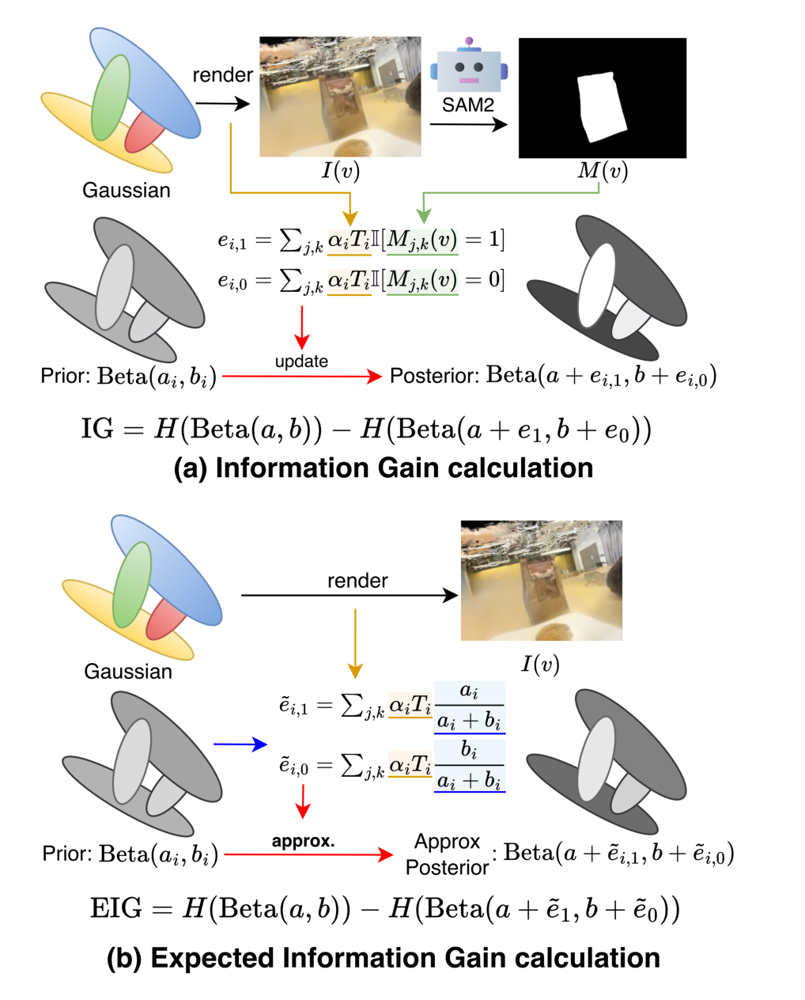
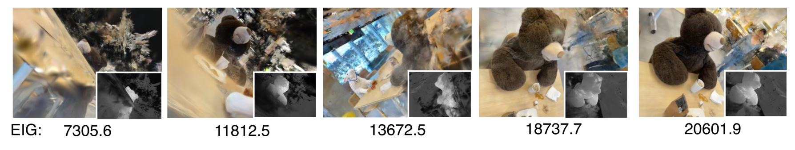
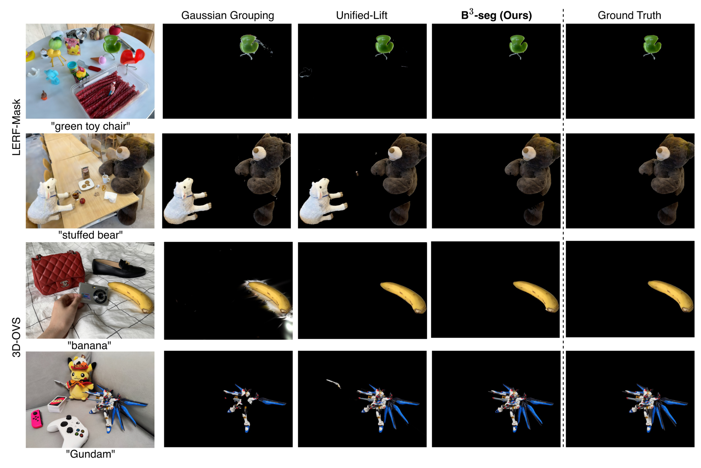
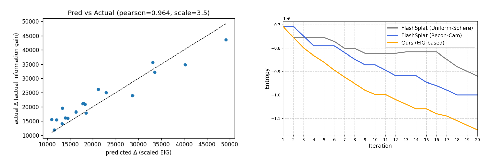

B3-Seg: can a 3D Gaussian scene choose its own segmentation views?
The short version. Interactive 3D Gaussian Splatting (3DGS) segmentation starts from a practical problem: the user may have a finished Gaussian scene, a text prompt, and no training trajectory or labeled camera set. B3-Seg turns that setting into a sequential Bayesian problem, where each Gaussian keeps a Beta-Bernoulli posterior over whether it belongs to the target object. The method uses one selected view at a time, obtains a 2D mask with Grounding DINO, Segment Anything Model 2 (SAM2), and Contrastive Language-Image Pretraining (CLIP), then adds the mask evidence as soft pseudo-counts. The expensive part is not updating the posterior; it is running the 2D mask stack, so B3-Seg scores many candidate views with analytic Expected Information Gain (EIG) before paying for SAM2 on only the best view. Under the paper's model, this greedy view-picking carries a worst-case guarantee: it captures at least $1-1/e \approx 63\%$ of the information the best possible policy could gather (it leans on two properties of the objective, adaptive monotonicity and submodularity). Against the directly comparable camera-free baselines it wins clearly: on LERF-Mask it reaches 84.5 mean IoU versus FlashSplat Recon-Cam's 76.5, and on 3D-OVS it beats both FlashSplat variants on all four scenes — though it does not lead the supervised, minutes-long methods there. One limit matters: the first view still seeds the posterior, and the proof guarantees information gain, not final segmentation IoU. Read this paper as a method for spending a small number of expensive 2D segmentation calls where they matter most, not as a universal segmentation oracle.

1. Motivation: why does view choice matter in 3DGS segmentation?
A 3DGS scene is a collection of semi-transparent Gaussians that render quickly from any camera. Editing that scene usually starts with a human intention such as "remove the stuffed bear" or "select the green chair." The hard part is not rendering the scene; it is deciding which Gaussians belong to the text prompt.
Many accurate 3DGS segmentation methods use reconstruction cameras, ground-truth masks, dense language features, or per-scene optimization. Those assumptions do not fit a low-latency editing workflow where the asset is already reconstructed and the user wants a mask in seconds. A few-second method therefore has to ask a sharper question: if only a small number of views can be segmented, which views should they be?
Random camera sampling wastes calls on views where the object is tiny, hidden, or ambiguous. Reconstruction-camera sampling is stronger when those cameras are available, but it still does not know which view will reduce uncertainty about the current object. B3-Seg's answer is to maintain uncertainty explicitly and to choose the view that should reduce it most.
Q: Why not segment many views and vote?
Guide: voting treats every view as equally worth buying. Interactive editing cannot afford that luxury.
A: The method's bottleneck is mask inference, not the posterior update. If a view does not see the object well, its mask adds little useful evidence but still costs a SAM2 call. B3-Seg first asks how much a view should reduce the Beta posterior entropy, then spends the mask call only on the best view.
Takeaway: The paper reframes camera selection as an information-allocation problem.
2. Contributions: what the paper actually adds
The authors make five claims. First, B3-Seg targets open-vocabulary 3DGS segmentation under camera-free and training-free conditions, where no predefined reconstruction trajectory, ground-truth semantic labels, or per-scene retraining is required after the seed view. Second, it rewrites per-Gaussian binary labels as Beta-Bernoulli Bayesian variables, so multi-view evidence becomes additive pseudo-counts. Third, it derives an analytic EIG score that estimates the value of a candidate view from one render instead of from a full 2D segmentation pass. Fourth, it proves adaptive monotonicity and adaptive submodularity of that EIG objective under the model, which gives greedy view selection a $(1-1/e)$ approximation to the optimal adaptive policy for expected information gain. Fifth, it reports higher accuracy than the comparable sampling-based baselines while staying in the few-second runtime regime.
The larger reader inference is that B3-Seg changes the role of geometry in open-vocabulary segmentation. Existing 2D foundation models still provide boxes, masks, and text-region scores. The 3D Bayesian layer decides when those 2D observations are worth taking and how to aggregate them once taken.
How to read "camera-free"
This page follows the paper's term. The initialization boundary is handled in Section 9 so the setup is not overstated.
3. Data and metrics: two object-centric 3DGS benchmarks
The experiments use two 3D open-vocabulary segmentation benchmarks. LERF-Mask contains the scenes figurines, ramen, and teatime, evaluated with the Gaussian Grouping protocol. 3D-OVS contains Bed, Bench, Sofa, and Lawn, evaluated following ObjectGS. B3-Seg uses 20 update iterations and 20 candidate views per iteration in the main setting.
The main LERF-Mask metrics are mean Intersection-over-Union (mIoU), which measures overlap between predicted and target masks, and mean boundary Intersection-over-Union (mBIoU), which weights boundary quality. Higher is better for both. The 3D-OVS table reports mIoU only. A method can be fast and still lose these columns; the tables below separate directly comparable sampling-based methods from methods that assume reconstruction views, labels, or per-scene optimization.
| Benchmark | Scenes reported | Metric | Protocol note |
|---|---|---|---|
| LERF-Mask | figurines; ramen; teatime | mIoU / mBIoU | Follows the Gaussian Grouping protocol; sampling-based baselines use the same segmentation pipeline for fair comparison. |
| 3D-OVS | Bed; Bench; Sofa; Lawn | mIoU | Follows ObjectGS; the top block assumes reconstruction views or labels, while the bottom block is camera-free and training-free. |
| Main B3-Seg setting | All reported scenes | 20-view budget | $T=20$, $N_{\mathrm{cand}}=20$, $a_{\mathrm{init}}=b_{\mathrm{init}}=1$, one canonical seed view, one RTX A6000. |
4. Pipeline: cheap view scoring, expensive mask inference
B3-Seg alternates between planning and observation. Planning is cheap because it only renders candidate views and evaluates the expected entropy drop. Observation is expensive because it runs the open-vocabulary 2D segmentation module. The pipeline is built to make that expensive step rare and targeted.
| Stage | Input | Operation | Output | Why it exists |
|---|---|---|---|---|
| Initialize posterior | All Gaussians $g_i$ | Set $(a_i,b_i)=(a_{\mathrm{init}},b_{\mathrm{init}})$ | Uniform Beta prior per Gaussian | The method needs an uncertainty state before any view is selected. |
| Seed from canonical view | Initial scene view and user prompt | Run the open-vocabulary segmentation module once | Initial mask and first Beta update | The posterior mean is weak at a flat prior, so the loop needs an initial object estimate. |
| Estimate object center | Gaussians with $a_i \gt b_i$ | Compute weighted center $c_{\mathrm{obj}}$ and radius $r_{\mathrm{obj}}$ | Sampling sphere for candidate cameras | Candidate views should look around the target object, not around the entire scene. |
| Score candidate views | $N_{\mathrm{cand}}$ cameras on the sphere | Render each candidate once and compute EIG | A ranked list of candidate views | This avoids running SAM2 on every candidate. |
| Observe selected view | Best view $v^\star$ | Render RGB, run Grounding DINO, SAM2 with mask input, and CLIP re-ranking | One 2D object mask | Only the most informative view pays the full open-vocabulary segmentation cost. |
| Update and repeat | Selected mask and rendered responsibilities | Add success/failure pseudo-counts to $(a_i,b_i)$ | Updated posterior and final label $a_i \gt b_i$ after $T$ iterations | Multi-view fusion becomes order-independent count accumulation. |
{kind=link}

{kind=link}

5. Method: from 2D masks to a posterior over 3D Gaussians
5.1 The rendering responsibility that becomes evidence
3DGS rendering expresses an image as a sum of Gaussian contributions along each ray. B3-Seg reuses those same contributions as soft responsibility weights when a 2D mask is observed.
If a Gaussian contributes strongly to pixels inside the target mask, it receives success evidence. If it contributes to pixels outside the mask, it receives failure evidence. The update is soft because a rendered pixel can contain fractional responsibility from several Gaussians.
Why this recovers FlashSplat's decision rule
With a symmetric prior, $a_{\mathrm{init}}=b_{\mathrm{init}}$, deciding by $a_i\gt b_i$ is the same as choosing the larger accumulated pseudo-count. The paper shows that this is exactly FlashSplat's label-selection rule:
The new part is not the final threshold. The new part is keeping the full posterior, which gives the method an uncertainty signal for active view selection.
5.2 Analytic EIG: estimate the value of a view before segmenting it
Information gain is the expected drop in uncertainty after observing a candidate view. For a Beta distribution, the entropy has a closed form:
True information gain would update the posterior with a real mask from the candidate view. That is accurate but expensive, because it requires SAM2 for every candidate.
B3-Seg replaces the unknown mask with the current posterior mean. Let $\tau_i(v)$ be the total rendered responsibility of Gaussian $i$ in candidate view $v$, and let $m_i=a_i/(a_i+b_i)$ be the current probability estimate that the Gaussian is foreground. The expected success and failure counts are:
The load-bearing approximation
EIG assumes that Gaussian $g_i$ falls inside the candidate mask with probability $m_i$. That is weak at a flat prior, where $m_i\approx0.5$ says little about the object. It becomes useful after the seed view and a few updates align the posterior with observed masks. The paper's Fig. 6 reports a strong correlation between analytic EIG and measured IG, $r=0.964$, which supports the approximation in its tested setting.
5.3 The open-vocabulary mask module
The selected view still needs a 2D mask. B3-Seg uses Grounding DINO for text-conditioned boxes, SAM2 for masks, and CLIP for semantic re-ranking. The SAM2 call is also guided by the current 3D posterior. The posterior mean renders a soft prior image, then a logit transform turns it into SAM2's mask input.
The supplement gives a concrete failure mode this fixes: on the Teatime prompt "cookies on a plate," Grounding DINO gives the wrong box a higher score, 0.65 versus 0.54, but CLIP re-ranking reverses the order and selects the correct region.
5.4 Why greedy EIG has a guarantee
The proof is about the information objective. If $S$ is the set of already selected views, the paper argues that adding a candidate view has nonnegative expected EIG and diminishing returns as the posterior concentration grows.
Q: Does Eq. 13 prove that B3-Seg is within 63% of the best possible mIoU?
A: No. The bound is on expected information gain in the Beta-Bernoulli model. It says the greedy view policy is near-optimal for reducing posterior uncertainty, under the paper's assumptions. Final mIoU depends on the 2D mask quality, the binary independence model, scene geometry, and whether lower entropy actually aligns with the ground-truth object mask.
Takeaway: The theorem justifies the view-selection objective; the benchmark tables test whether that objective improves segmentation.
6. Training and compute: no new model training, but several pretrained modules
B3-Seg is training-free in the narrow but important sense that it does not optimize a new network or fine-tune a scene-specific 3D representation. Its runtime cost comes from rendering, candidate-view scoring, 2D mask inference, and Beta updates. The paper reports experiments on a single RTX A6000 GPU.
| Item | Paper disclosure | How to read it |
|---|---|---|
| New model training | None | No optimizer, learning rate, epochs, or backpropagation stage is introduced for B3-Seg. |
| External modules | Grounding DINO, SAM2, CLIP | These are pretrained components; their pretraining cost is outside the B3-Seg runtime claim. |
| Main iteration budget | $T=20$ updates; $N_{\mathrm{cand}}=20$ candidate views | The method evaluates many cheap candidate renders and runs mask inference only on selected views. |
| Prior initialization | $a_{\mathrm{init}}=b_{\mathrm{init}}=1$ | The initial Beta prior is uniform; the first view supplies the first object-specific posterior signal. |
| Seed view | First camera viewpoint in scene metadata | This is the first posterior update, not a full reconstruction-camera trajectory. |
| Hardware | Single RTX A6000 GPU | The paper gives the GPU model but does not provide a full software stack or hardware-normalized throughput table. |
7. Experiments: where does active sampling win?
The main result tables must be read by setup. The upper blocks contain strong methods that rely on reconstruction views, ground-truth labels, or 30,000-step optimization. The lower blocks are the fair comparison for B3-Seg: sampling-based, no retraining, 20 views or updates.
7.1 LERF-Mask: accuracy, assumptions, and latency
| Method | figurines | ramen | teatime | mean | views | time | steps |
|---|---|---|---|---|---|---|---|
| Assumes reconstruction views and/or labels | |||||||
| LERF | 33.5 / 30.6 | 28.3 / 14.7 | 49.7 / 42.6 | 37.2 / 29.3 | GT | 45 min | 30k |
| SA3D | 24.9 / 23.8 | 7.4 / 7.0 | 42.5 / 39.2 | 24.9 / 23.3 | GT | 35 min | 30k |
| LangSplat | 52.8 / 50.5 | 50.4 / 44.7 | 69.5 / 65.6 | 57.6 / 53.6 | GT | 19 min | 30k |
| Gaussian Grouping | 69.7 / 67.9 | 77.0 / 68.8 | 71.7 / 66.1 | 72.8 / 67.6 | GT | 37 min | 30k |
| Gaga | 90.7 / 89.0 | 64.1 / 61.6 | 69.3 / 66.0 | 74.7 / 72.2 | GT | 13 min | 30k |
| Unified-Lift | — | — | — | 80.9 / 77.1 | GT | 40 min | 30k |
| ObjectGS | 88.2 / 89.0 | 88.0 / 79.9 | 88.9 / 88.6 | 88.4 / 85.8 | GT | ~50 min | 30k |
| Sampling-based, no retraining | |||||||
| FlashSplat (Uniform-Sphere) | 60.2 / 57.5 | 68.4 / 61.5 | 80.4 / 76.3 | 69.6 / 65.1 | Sample | 10.2 sec | 20 |
| FlashSplat (Recon-Cam) | 71.6 / 69.1 | 71.4 / 66.3 | 86.6 / 83.9 | 76.5 / 73.1 | Sample | 10.1 sec | 20 |
| B3-Seg | 88.3 / 85.4 | 75.3 / 69.7 | 89.8 / 88.0 | 84.5 / 81.0 | Sample | 12.1 sec | 20 |
How to read Table 1: within the comparable bottom block, B3-Seg is best on all three scenes and raises the mean over FlashSplat Recon-Cam by 8.0 mIoU points and 7.9 mBIoU points. It does not beat the top non-comparable block on every column. ObjectGS has a higher mean, 88.4/85.8 versus 84.5/81.0, but it uses GT views or labels and about 50 minutes of optimization. On figurines and teatime, B3-Seg's mIoU roughly matches ObjectGS, but its boundary IoU is lower on those scenes.
{kind=link}

7.2 3D-OVS: the comparable block is all four scenes
| Method | Bed | Bench | Sofa | Lawn |
|---|---|---|---|---|
| Assumes reconstruction views and/or labels | ||||
| LangSplat | 92.5 | 94.2 | 90.0 | 96.1 |
| Feature 3DGS | 83.5 | 90.7 | 86.9 | 93.4 |
| LEGaussians | 84.9 | 91.1 | 87.8 | 92.5 |
| Gaussian Grouping | 83.0 | 91.5 | 87.3 | 90.6 |
| N2F2 | 93.8 | 92.6 | 92.1 | 96.3 |
| SAGA | 97.4 | 95.4 | 93.5 | 96.6 |
| FastLGS | 94.7 | 95.1 | 90.6 | 96.2 |
| LBG | 97.7 | 96.3 | 97.3 | 87.4 |
| CCL-LGS | 97.3 | 95.0 | 92.3 | 96.1 |
| ObjectGS | 98.0 | 96.4 | 97.2 | 95.4 |
| Camera-free and training-free | ||||
| FlashSplat (Uniform-Sphere) | 91.7 | 86.9 | 90.2 | 91.9 |
| FlashSplat (Recon-Cam) | 94.3 | 90.3 | 85.7 | 96.3 |
| B3-Seg | 97.1 | 92.2 | 94.1 | 96.8 |
How to read Table 2: in the comparable bottom block, B3-Seg beats both FlashSplat variants on Bed, Bench, Sofa, and Lawn. In the full table, it is not the best method on Bed, Bench, or Sofa; ObjectGS and LBG are higher on those columns. On Lawn, B3-Seg's 96.8 is the highest listed, but it is only 0.2 above SAGA's 96.6, with no error bars, so the honest reading is "within the noise" rather than a decisive lawn-scene win.
7.3 Runtime and information efficiency
| Mask inference | View selection | Beta update | Other | Total |
|---|---|---|---|---|
| 9.761 s | 2.111 s | 0.119 s | 0.117 s | 12.108 s |
The runtime table explains the method's design. Mask inference takes 9.761 of 12.108 seconds, so the system is dominated by the 2D segmentation stack. EIG view selection costs 2.111 seconds, and Beta updates cost only 0.119 seconds. That split is why the method evaluates candidates with cheap renders and reserves SAM2 for selected views.
{kind=link}

Q: What is the experimental claim after all these caveats?
A: Under the camera-free and training-free comparison setup, B3-Seg uses 20 selected views to beat the sampling baselines on LERF-Mask and 3D-OVS. The result is strongest as a practical-efficiency claim: it spends most of its 12.108 seconds on selected mask calls and uses analytic EIG to avoid wasted candidate mask inference.
Takeaway: The tables support information-efficient segmentation, not unconstrained state of the art across all assumptions.
8. Ablations: which pieces carry the result?
The ablations test three separate questions: whether the open-vocabulary mask module needs CLIP and SAM2 prior input, how many candidates and iterations are worth paying for, and whether the initial object center has to be perfect.
| CLIP re-rank | SAM2 mask-input | mIoU | mBIoU | mIoU delta vs. base | mBIoU delta vs. base |
|---|---|---|---|---|---|
| No | No | 74.9 | 70.2 | — | — |
| Yes | No | 81.5 | 76.6 | +6.6 | +6.4 |
| Yes | Yes | 84.5 | 81.0 | +9.6 | +10.8 |
CLIP re-ranking is the larger of the two measured additions: it raises mIoU from 74.9 to 81.5. Adding SAM2 mask input then reaches 84.5, a further 3.0 mIoU points and 4.4 mBIoU points over the CLIP-only row. This supports the paper's claim that active view choice still needs a reliable 2D mask module.
| Setting | 5 | 10 | 20 | 30 |
|---|---|---|---|---|
| $N_{\mathrm{cand}}$ mIoU | 76.2 | 83.1 | 84.5 | 84.6 |
| $N_{\mathrm{cand}}$ time | 10.3 s | 11.6 s | 12.1 s | 14.4 s |
| $T$ mIoU | 79.8 | 82.7 | 84.5 | 84.8 |
| $T$ time | 3.5 s | 6.6 s | 12.1 s | 19.4 s |
The 20-candidate and 20-iteration setting is a practical knee. Moving $N_{\mathrm{cand}}$ from 20 to 30 changes mIoU from 84.5 to 84.6, a 0.1-point difference with no error bars. Moving $T$ from 20 to 30 changes mIoU from 84.5 to 84.8 while runtime rises from 12.1 to 19.4 seconds. The honest interpretation is saturation near 20, not a meaningful 30-step accuracy win.
| Center shift | 0% | 20% | 50% | 70% | 100% |
|---|---|---|---|---|---|
| mIoU | 84.5 | 83.6 | 82.9 | 81.7 | 80.7 |
| Delta | — | -0.9 | -1.6 | -2.8 | -3.8 |
A 50% shift costs 1.6 mIoU points, and a 100% shift costs 3.8 points. That is robust but not invariant. The initial posterior still matters; EIG can compensate for a rough center better than for a completely wrong object hypothesis.
Q: Do the ablations agree with the Bayesian story?
A: Mostly yes. EIG chooses views, but the chosen view must still yield the right 2D mask, which explains the CLIP and SAM2-prior gains. The sensitivity table then shows why the authors stop at 20 candidates and 20 iterations: more search gives little extra accuracy but more latency.
Takeaway: The active sampler is the main planning idea, while CLIP re-ranking and SAM2 prior input are the reliability patches that make the selected observations usable.
9. Limitations: where the result should stop
| Boundary | Paper evidence | How to read it |
|---|---|---|
| Initial view requirement | The loop starts from a canonical view; the supplement says an interactive editor naturally provides the user's current view. | Camera-free means no predefined camera trajectory for active sampling, not that segmentation starts without any view. |
| External model dependency | Boxes, masks, and semantic ranking come from Grounding DINO, SAM2, and CLIP. | If those models fail on a prompt or object type, the Bayesian update cannot recover a correct mask from bad observations. |
| Information objective vs. segmentation metric | The $(1-1/e)$ proof is for expected EIG; Eq. 13 gives the precise statement. | The benchmark tables are the empirical bridge from entropy reduction to mask quality. |
| Binary independence model | The main method uses independent Beta-Bernoulli variables for foreground/background labels. | It ignores spatial correlation between neighboring Gaussians, and multi-class segmentation is left to the Dirichlet-Categorical extension in the supplement. |
| Object-centric scope | The paper says experiments focus on typical object-centric scenes. | Wide indoor spaces, outdoor scans, dynamic scenes, and multi-scale exploration remain future work. |
| Runtime bottleneck | Mask inference is 9.761 of 12.108 seconds. | The Bayesian update is cheap, but end-to-end latency remains tied to the selected 2D segmentation calls and their hardware implementation. |
| Evaluation split | LERF-Mask and 3D-OVS tables separate supervised or label-dependent methods from no-retraining sampling methods. | The strongest claim is against the comparable sampling baselines, not against every method in the full tables. |
Q: What is the most likely overstatement?
A: "B3-Seg proves optimal 3DGS segmentation in seconds." The paper supports a narrower claim: with a seed view and pretrained 2D segmentation models, analytic EIG gives a principled greedy policy for choosing informative views, and the tested 20-view pipeline improves over sampling baselines in a few seconds.
Takeaway: The method is strongest as an information-efficient interaction recipe, not as a replacement for all supervised or optimized 3D segmentation systems.
10. Summary: the useful mental model
In one sentence: B3-Seg treats each 2D mask as Bayesian evidence over 3D Gaussians, then uses analytic EIG to decide which expensive mask to buy next.
Three takeaways
- The posterior is the data structure. It stores accumulated mask evidence, exposes uncertainty, and reduces FlashSplat-style voting to a MAP special case.
- EIG is the planner. It turns view selection from a camera-trajectory heuristic into a measurable entropy-reduction objective with a greedy guarantee for that objective.
- The evidence is scoped but coherent. The comparable blocks show clear gains over sampling baselines, while the limitations keep the theorem, initial view, external models, and object-centric evaluation in their proper boxes.
A good reading path through the paper is: read Eq. 4-8 to see how pseudo-counts produce 3D labels, then Eq. 9-13 to see why candidate views can be ranked cheaply, then Table 1 and Table 3 to separate the active-sampling gain from the mask-module reliability gain.
Sources and figure provenance
- Hiromichi Kamata, Samuel Arthur Munro, Fuminori Homma. B3-Seg: Camera-Free, Training-Free 3DGS Segmentation via Analytic EIG and Beta-Bernoulli Bayesian Updates. arXiv:2602.17134v1 [cs.CV], 19 Feb 2026. Sony Group Corporation; Pixomondo.
- All formulas, result tables, runtime numbers, dataset names, and limitation claims in this page are taken from the paper text and supplementary material. The distinction between the information-gain guarantee and final IoU metrics is reader interpretation from the paper's theorem statement and result tables.
- Figure provenance: Page Figure 1 maps to paper Figure 1, the teaser loop for active EIG view selection and Beta-Bernoulli updates. Page Figure 2 maps to paper Figure 3, the IG versus EIG comparison. Page Figure 3 maps to paper Figure 5, candidate-view EIG on LERF-Mask Teatime with prompt "stuffed bear." Page Figure 4 maps to paper Figure 4, qualitative text-guided 3D segmentation comparisons. Page Figure 5 combines paper Figure 6, predicted EIG versus measured IG, and paper Figure 7, posterior entropy over iterations.